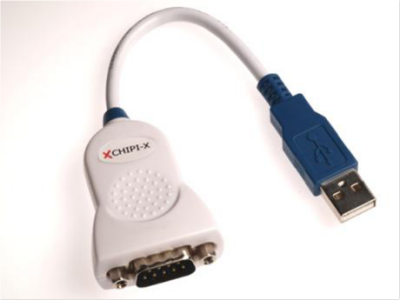
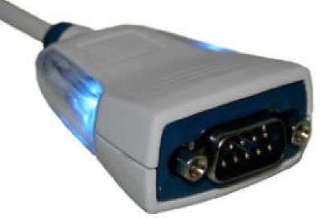

|
Gemini-2 and Gemini-1 Telescope Mount Controllers Website and Tutorials |
| Recommended Serial Port converters |
|
Hi. I would like to recommend USB to Serial converters that use
the FTDI chipset. There are always the latest drivers available
for all favors of Windows, and Mac, plus many more. The drivers are available from http://www.ftdichip.com/FTDrivers.htm You will want the VCP drivers from this page. http://www.ftdichip.com/Drivers/VCP.htm I recommend using the setup.exe version of the driver for windows. You install it first before plugging in the converter. |
| Where to get the Cables: |
| Digikey has two models: |
The second models is:
|
| Mouser.com also has them: THere are two different models: |
|
The newest is the Chipi-X10. Here are the links to it:
|
| The second model is the US232R in 10 and 100 cm cable |
| Here are pictures of both models: |
|
 the Chipi Versions |
 the US232R versions |
| Amazon.com also carries the US232R versions. Just search for US232R on there site. |
| Page last updated on Sept 8, 2015 |